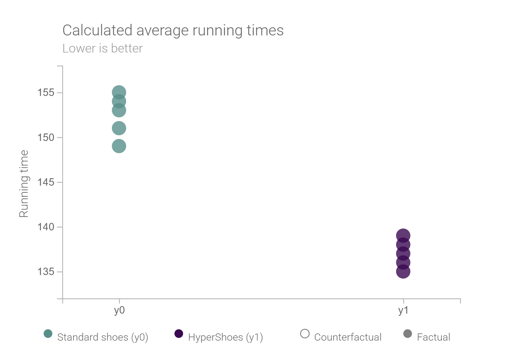
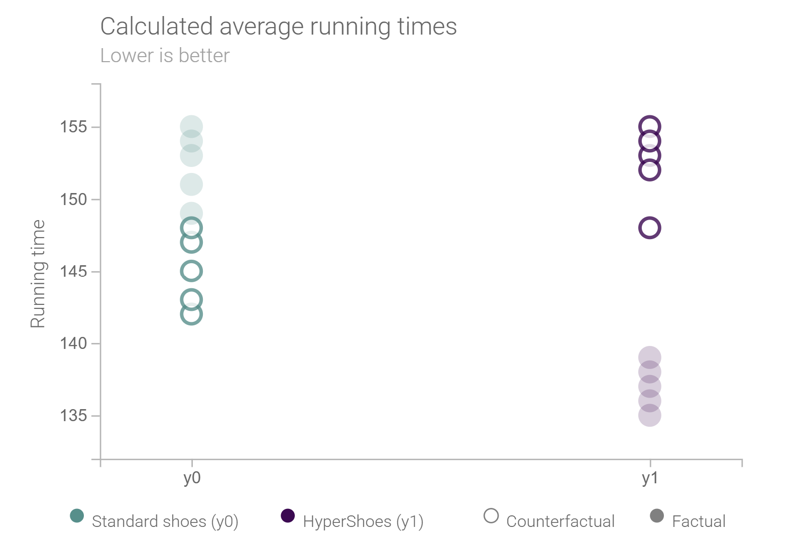
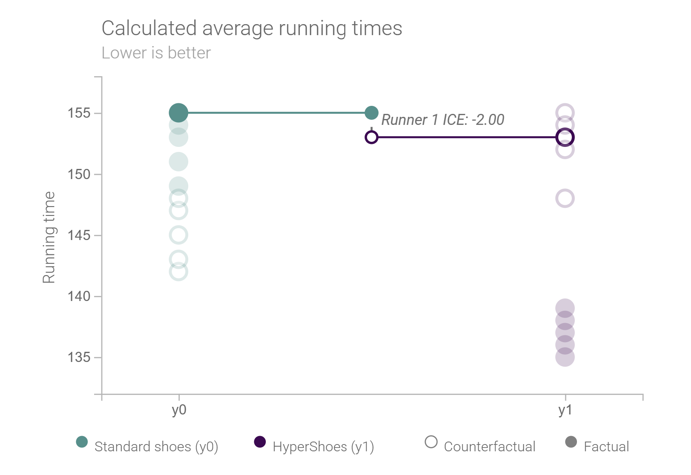
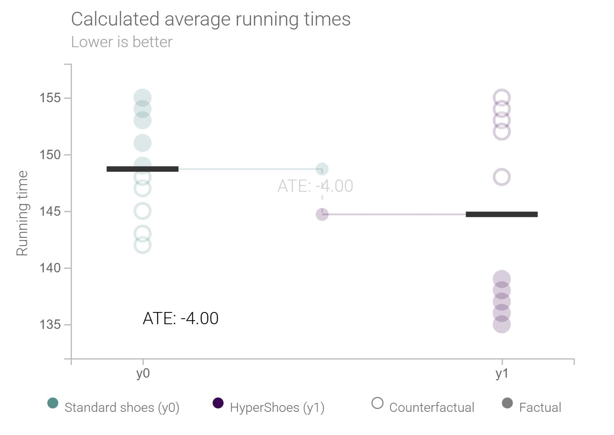
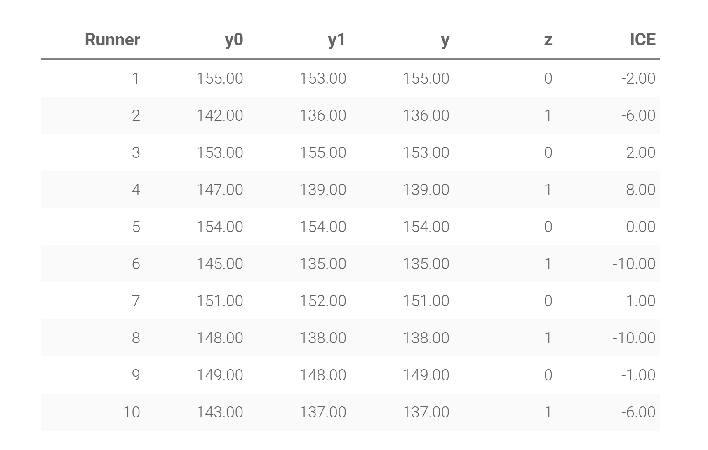

Welcome!
This is the Interactive Stats Lab. Explore our lessons and analysis tools below.

BART and Causal Inference
Learn about Bayesian Additive Regression Trees and causal modeling.

Individual, Group, and Population Effects
Understand how effects differ across levels of analysis.

Predictive vs. Causal Language
Explore the differences between predictive and causal statements in data science.

Example Card 1
This is a sample card for demonstration purposes. It does not link anywhere.

Example Card 2
Another placeholder card using the same image set for layout purposes.
Example Card 3
This card is purely illustrative and does not redirect the user.